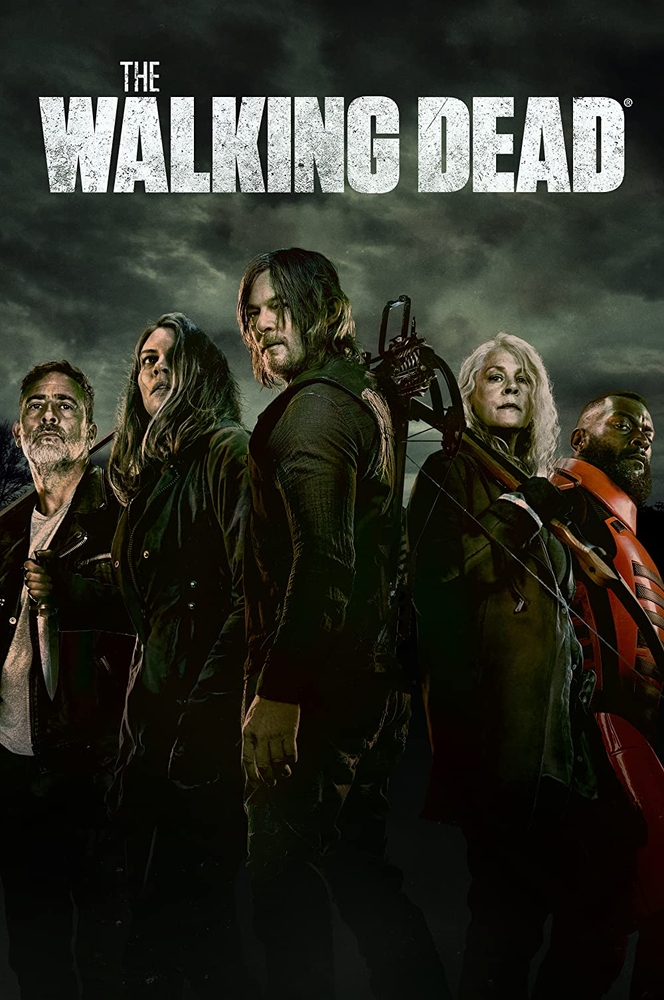

Cemal Elgay
Hakkımda
Merhaba. Ben Cemal Elgay İzmir ' de yaşıyorum.Kitap okumayı, basketbol oynamayı, Bilimkurgu dizi ve film izlemeyi çok seviyorum.
Marvel ve DC hayranıyım boş zamanlarımda çizgi roman okuyorum.
Artık önceliğim kod yazmak oldu iyi ki sizin gibi bir sayfayı keşfetmişim.
İlgi Alanlarım
- Film
- Dizi
- Kitap
Sevdiğim Diziler
The Walking Dead

The Walking Dead, Frank Darabont tarafından geliştirilen bir Amerikan televizyon dizisidir. Hikâyesi, Robert Kirkman, Tony Moore ve Charlie Adlard 'ın aynı adlı çizgi romanına dayanmaktadır. Dizinin başrolünde, geçirdiği bir kaza sonrası girdiği komadan beklenmedik biçimde uyanan ve artık tüm dünyaya